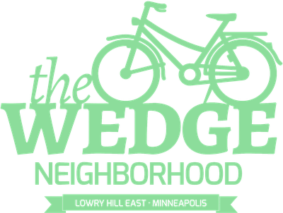

QR Code Generator
QR code generator that replaces the need to use "free" generator sites that use redirects or track scans. It runs in your browser, nothing you type is uploaded, and your code links straight to your page.
Before you print
- Scan the QR code with your phone before printing to make sure it opens the right page.
- Keep dark codes on a light background. Low contrast or inverted colors may not work properly.
- Print the code at least 2 cm (about ¾ in) wide and leave the white border intact.
- Avoid link shorteners (bit.ly and similar) that log every click. Link directly to the final page.
- A QR code can't control what happens after the scan. If the page you link to uses analytics, it may still track visitors.